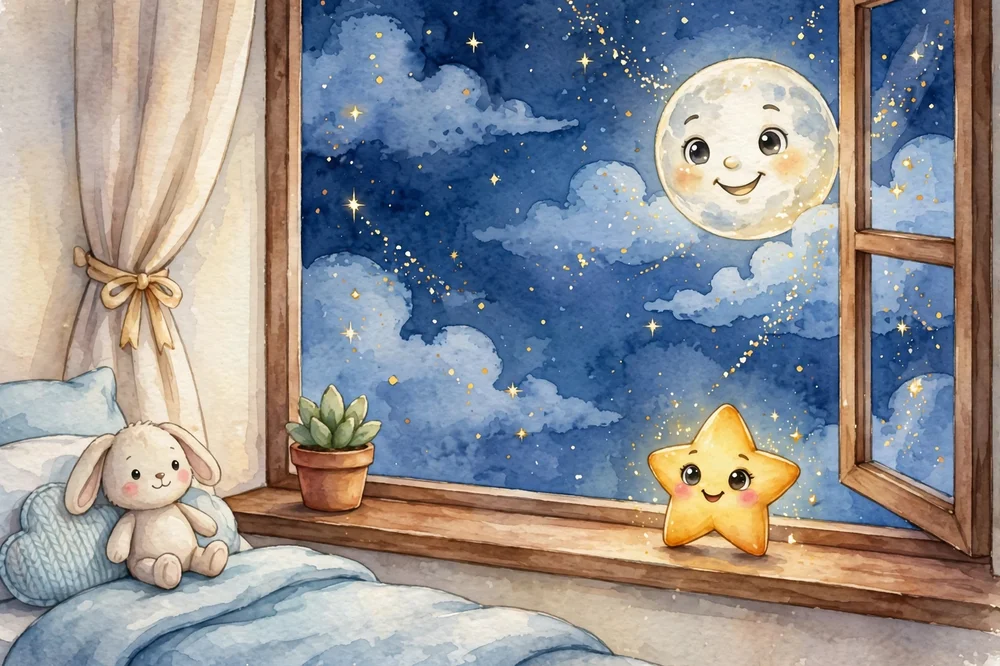
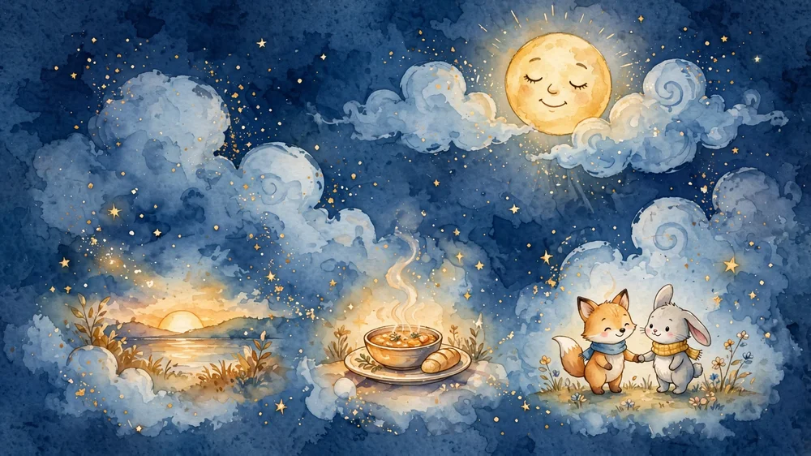
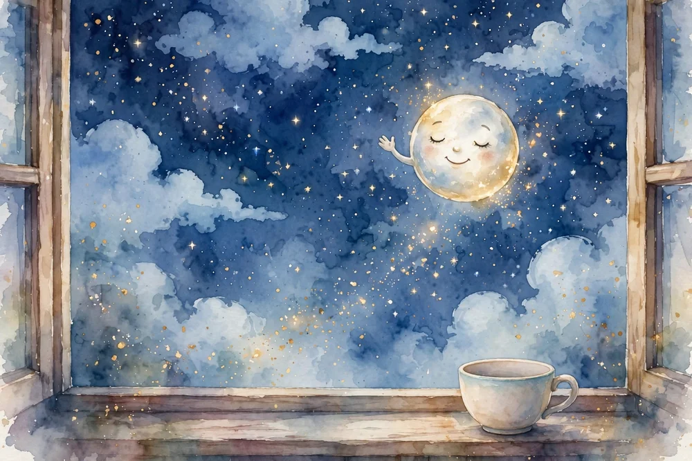

Un té con la Luna
Ya es de noche. La luna ha salido y se ha asomado a tu ventana, curiosa, como cada noche. Antes de dormir, vamos a tomar un té con ella. Ponte cómoda, cómodo, cierra los ojos y respira despacio… una vez… dos veces… tres.

Imagina una taza calentita entre tus manos. Huele a manzanilla y a miel. La luna se acerca un poquito más para olerla también. «Mmm», dice. A la luna le encanta el té de las noches tranquilas.
Mientras el té se enfría un poco, la luna te pregunta: ¿qué ha sido lo más bonito de tu día? Piensa… quizá un juego, una risa, un abrazo. Guárdalo en tu taza como si fuera azúcar: eso endulza la noche.
Agradece también las cosas pequeñas: el sol que te despertó esta mañana, la comida rica, ese amigo que te esperó. La luna asiente con cada cosa que nombras. Dice que las noches saben mejor cuando el corazón está agradecido.

Mira, ahí viene Estrellita, la estrellita de nuestro nido. Viene a echar un poco de brillo dorado en tu té, para que tus sueños brillen esta noche. Da un sorbo pequeño… ¿notas el calorcito bajando hasta la barriga?
El té se ha acabado. La luna te da las buenas noches y sube despacio a su sitio en el cielo, donde velará tu sueño. Las estrellas parpadean despacito, como si te arroparan.
